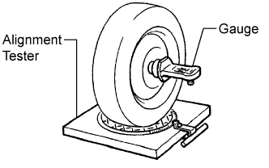
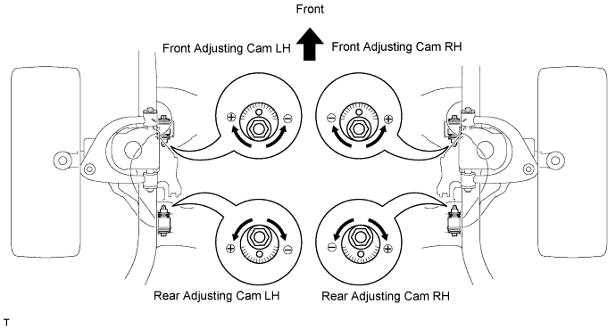
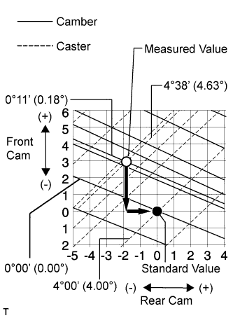
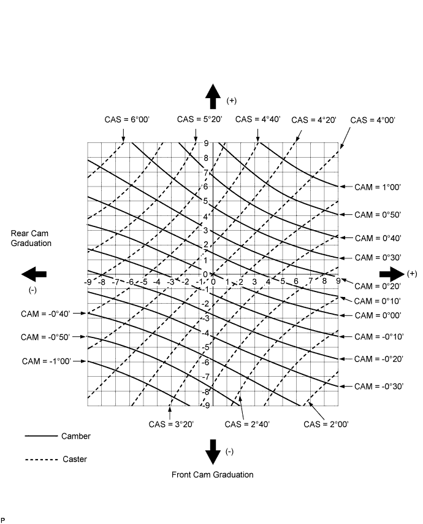
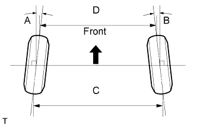
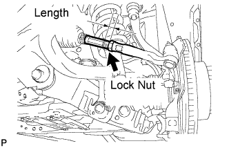
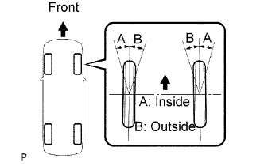

FRONT WHEEL ALIGNMENT > ADJUSTMENT |
| 1. INSPECT TIRE |
Inspect the tires (Click here).
| 2. MEASURE VEHICLE HEIGHT |
 |
Press down on the vehicle several times to stabilize the suspension, and then measure the vehicle height.
| Vehicle Model | Front A - B | Rear C - D | |
| GRJ200L/R-GMMNK | 97 mm (3.82 in.) | 60 mm (2.36 in.) | |
| GRJ200L/R-GNMNK | 97 mm (3.82 in.) | 60 mm (2.36 in.) | |
| GRJ200L-GPMNK | 97 mm (3.82 in.) | 60 mm (2.36 in.) | |
| UZJ200L-GNAEK | 97 mm (3.82 in.) | 60 mm (2.36 in.) | |
| VDJ200L-GMMNZ | 97 mm (3.82 in.) | 60 mm (2.36 in.) | |
| VDJ200L/R-GNMNZ | 97 mm (3.82 in.) | 60 mm (2.36 in.) | |
| VDJ200L/R-GNTEZ | 97 mm (3.82 in.) | 60 mm (2.36 in.) | |
| VDJ200L/R-GNTNZ | 97 mm (3.82 in.) | 60 mm (2.36 in.) | |
| VDJ200L/R-GPMNZ | 97 mm (3.82 in.) | 60 mm (2.36 in.) | |
| VDJ200R-GMMNZ | 97 mm (3.82 in.) | 60 mm (2.36 in.) | |
| GRJ200L-GNANKV | 88 mm (3.46 in.) | 80 mm (3.15 in.) | |
| GRJ200L-GNMNKV | 88 mm (3.46 in.) | 80 mm (3.15 in.) | |
| GRJ200L-GPANKV | 88 mm (3.46 in.) | 80 mm (3.15 in.) | |
| GRJ200L-GPMNKV | 88 mm (3.46 in.) | 80 mm (3.15 in.) | |
| UZJ200L-GNANKV | 88 mm (3.46 in.) | 80 mm (3.15 in.) | |
| UZJ200L-GNAEKV | 88 mm (3.46 in.) | 80 mm (3.15 in.) | |
| VDJ200L-GNMNZV | 88 mm (3.46 in.) | 80 mm (3.15 in.) | |
| VDJ200L-GPMNZV | 88 mm (3.46 in.) | 80 mm (3.15 in.) | |
| VDJ200L-GNTNZV | 88 mm (3.46 in.) | 80 mm (3.15 in.) | |
| UZJ200R-GNAEKQ | w/o Bull Bar | 88 mm (3.46 in.) | 60 mm (2.36 in.) |
| w/ Bull Bar | 97 mm (3.82 in.) | 60 mm (2.36 in.) | |
| UZJ200R-GNANKQ | w/o Bull Bar | 88 mm (3.46 in.) | 60 mm (2.36 in.) |
| w/ Bull Bar | 97 mm (3.82 in.) | 60 mm (2.36 in.) | |
| VDJ200R-GNTEZQ | w/o Bull Bar | 88 mm (3.46 in.) | 60 mm (2.36 in.) |
| w/ Bull Bar | 97 mm (3.82 in.) | 60 mm (2.36 in.) | |
| VDJ200R-GNTNZQ | w/o Bull Bar | 88 mm (3.46 in.) | 60 mm (2.36 in.) |
| w/ Bull Bar | 97 mm (3.82 in.) | 60 mm (2.36 in.) | |
| UZJ200L-GMAEKW | w/o Active Height Control | 97 mm (3.82 in.) | 60 mm (2.36 in.) |
| w/ Active Height Control | 101 mm (3.98 in.) | 94 mm (3.70 in.) | |
| UZJ200L/R-GNAEKW | w/o Active Height Control | 97 mm (3.82 in.) | 60 mm (2.36 in.) |
| w/ Active Height Control | 101 mm (3.98 in.) | 94 mm (3.70 in.) | |
| VDJ200L-GMTEZW | w/o Active Height Control | 97 mm (3.82 in.) | 60 mm (2.36 in.) |
| w/ Active Height Control | 101 mm (3.98 in.) | 94 mm (3.70 in.) | |
| VDJ200L/R-GNTEZW | w/o Active Height Control | 97 mm (3.82 in.) | 60 mm (2.36 in.) |
| w/ Active Height Control | 101 mm (3.98 in.) | 94 mm (3.70 in.) | |
| 3. INSPECT CAMBER, CASTER AND STEERING AXIS INCLINATION |
 |
Install the camber-caster-kingpin gauge or place the front wheels on the center of the wheel alignment tester.
Inspect the camber, caster and steering axis inclination.
| Vehicle Model | Camber Inclination | ||
| GRJ200L/R-GMMNK | Camber Left - right error | -0°10' +/-45' (-0.16° +/-0.75°) 45' (0.75°) or less | |
| GRJ200L/R-GNMNK | Camber Left - right error | 0°10' +/-45' (0.16° +/-0.75°) 45' (0.75°) or less | |
| GRJ200L-GPMNK | Camber Left - right error | 0°10' +/-45' (0.16° +/-0.75°) 45' (0.75°) or less | |
| UZJ200L-GNAEK | Camber Left - right error | 0°10' +/-45' (0.16° +/-0.75°) 45' (0.75°) or less | |
| VDJ200L-GMMNZ | Camber Left - right error | 0°10' +/-45' (0.16° +/-0.75°) 45' (0.75°) or less | |
| VDJ200L/R-GNMNZ | Camber Left - right error | 0°10' +/-45' (0.16° +/-0.75°) 45' (0.75°) or less | |
| VDJ200L/R-GNTEZ | Camber Left - right error | 0°10' +/-45' (0.16° +/-0.75°) 45' (0.75°) or less | |
| VDJ200L/R-GNTNZ | Camber Left - right error | 0°10' +/-45' (0.16° +/-0.75°) 45' (0.75°) or less | |
| VDJ200L/R-GPMNZ | Camber Left - right error | 0°10' +/-45' (0.16° +/-0.75°) 45' (0.75°) or less | |
| VDJ200R-GMMNZ | Camber Left - right error | 0°10' +/-45' (0.16° +/-0.75°) 45' (0.75°) or less | |
| GRJ200L-GNANKV | Camber Left - right error | 0°18' +/-45' (0.30° +/-0.75°) 45' (0.75°) or less | |
| GRJ200L-GNMNKV | Camber Left - right error | 0°18' +/-45' (0.30° +/-0.75°) 45' (0.75°) or less | |
| GRJ200L-GPANKV | Camber Left - right error | 0°18' +/-45' (0.30° +/-0.75°) 45' (0.75°) or less | |
| GRJ200L-GPMNKV | Camber Left - right error | 0°18' +/-45' (0.30° +/-0.75°) 45' (0.75°) or less | |
| UZJ200L-GNANKV | Camber Left - right error | 0°18' +/-45' (0.30° +/-0.75°) 45' (0.75°) or less | |
| UZJ200L-GNAEKV | Camber Left - right error | 0°18' +/-45' (0.30° +/-0.75°) 45' (0.75°) or less | |
| VDJ200L-GNMNZV | Camber Left - right error | 0°18' +/-45' (0.30° +/-0.75°) 45' (0.75°) or less | |
| VDJ200L-GPMNZV | Camber Left - right error | 0°18' +/-45' (0.30° +/-0.75°) 45' (0.75°) or less | |
| VDJ200L-GNTNZV | Camber Left - right error | 0°18' +/-45' (0.30° +/-0.75°) 45' (0.75°) or less | |
| UZJ200R-GNAEKQ | w/o Bull Bar | Camber Left - right error | 0°20' +/-45' (0.34° +/-0.75°) 45' (0.75°) or less |
| w/ Bull Bar | Camber Left - right error | 0°10' +/-45' (0.16° +/-0.75°) 45' (0.75°) or less | |
| UZJ200R-GNANKQ | w/o Bull Bar | Camber Left - right error | 0°20' +/-45' (0.34° +/-0.75°) 45' (0.75°) or less |
| w/ Bull Bar | Camber Left - right error | 0°10' +/-45' (0.16° +/-0.75°) 45' (0.75°) or less | |
| VDJ200R-GNTEZQ | w/o Bull Bar | Camber Left - right error | 0°20' +/-45' (0.34° +/-0.75°) 45' (0.75°) or less |
| w/ Bull Bar | Camber Left - right error | 0°10' +/-45' (0.16° +/-0.75°) 45' (0.75°) or less | |
| VDJ200R-GNTNZQ | w/o Bull Bar | Camber Left - right error | 0°20' +/-45' (0.34° +/-0.75°) 45' (0.75°) or less |
| w/ Bull Bar | Camber Left - right error | 0°10' +/-45' (0.16° +/-0.75°) 45' (0.75°) or less | |
| UZJ200L-GMAEKW | w/o Active Height Control | Camber Left - right error | 0°10' +/-45' (0.16° +/-0.75°) 45' (0.75°) or less |
| w/ Active Height Control | Camber Left - right error | 0°00' +/-45' (0.00° +/-0.75°) 45' (0.75°) or less | |
| UZJ200L/R-GNAEKW | w/o Active Height Control | Camber Left - right error | 0°10' +/-45' (0.16° +/-0.75°) 45' (0.75°) or less |
| w/ Active Height Control | Camber Left - right error | 0°00' +/-45' (0.00° +/-0.75°) 45' (0.75°) or less | |
| VDJ200L-GMTEZW | w/o Active Height Control | Camber Left - right error | 0°10' +/-45' (0.16° +/-0.75°) 45' (0.75°) or less |
| w/ Active Height Control | Camber Left - right error | 0°00' +/-45' (0.00° +/-0.75°) 45' (0.75°) or less | |
| VDJ200L/R-GNTEZW | w/o Active Height Control | Camber Left - right error | 0°10' +/-45' (0.16° +/-0.75°) 45' (0.75°) or less |
| w/ Active Height Control | Camber Left - right error | 0°00' +/-45' (0.00° +/-0.75°) 45' (0.75°) or less | |
| Vehicle Model | Caster Inclination | ||
| GRJ200L/R-GMMNK | Caster Left - right error | 2°26' +/-45' (2.44° +/-0.75°) 45' (0.75°) or less | |
| GRJ200L/R-GNMNK | Caster Left - right error | 2°26' +/-45' (2.44° +/-0.75°) 45' (0.75°) or less | |
| GRJ200L-GPMNK | Caster Left - right error | 2°26' +/-45' (2.44° +/-0.75°) 45' (0.75°) or less | |
| UZJ200L-GNAEK | Caster Left - right error | 2°26' +/-45' (2.44° +/-0.75°) 45' (0.75°) or less | |
| VDJ200L-GMMNZ | Caster Left - right error | 2°26' +/-45' (2.44° +/-0.75°) 45' (0.75°) or less | |
| VDJ200L/R-GNMNZ | Caster Left - right error | 2°26' +/-45' (2.44° +/-0.75°) 45' (0.75°) or less | |
| VDJ200L/R-GNTEZ | Caster Left - right error | 2°26' +/-45' (2.44° +/-0.75°) 45' (0.75°) or less | |
| VDJ200L/R-GNTNZ | Caster Left - right error | 2°26' +/-45' (2.44° +/-0.75°) 45' (0.75°) or less | |
| VDJ200L/R-GPMNZ | Caster Left - right error | 2°26' +/-45' (2.44° +/-0.75°) 45' (0.75°) or less | |
| VDJ200R-GMMNZ | Caster Left - right error | 2°26' +/-45' (2.44° +/-0.75°) 45' (0.75°) or less | |
| GRJ200L-GNANKV | Caster Left - right error | 3°02' +/-45' (3.04° +/-0.75°) 45' (0.75°) or less | |
| GRJ200L-GNMNKV | Caster Left - right error | 3°02' +/-45' (3.04° +/-0.75°) 45' (0.75°) or less | |
| GRJ200L-GPANKV | Caster Left - right error | 3°02' +/-45' (3.04° +/-0.75°) 45' (0.75°) or less | |
| GRJ200L-GPMNKV Option Less | Caster Left - right error | 3°02' +/-45' (3.04° +/-0.75°) 45' (0.75°) or less | |
| UZJ200L-GNANKV | Caster Left - right error | 3°02' +/-45' (3.04° +/-0.75°) 45' (0.75°) or less | |
| UZJ200L-GNAEKV | Caster Left - right error | 3°02' +/-45' (3.04° +/-0.75°) 45' (0.75°) or less | |
| VDJ200L-GNMNZV | Caster Left - right error | 3°02' +/-45' (3.04° +/-0.75°) 45' (0.75°) or less | |
| VDJ200L-GPMNZV | Caster Left - right error | 3°02' +/-45' (3.04° +/-0.75°) 45' (0.75°) or less | |
| VDJ200L-GNTNZV | Caster Left - right error | 3°02' +/-45' (3.04° +/-0.75°) 45' (0.75°) or less | |
| UZJ200R-GNAEKQ | w/o Bull Bar | Caster Left - right error | 2°28' +/-45' (2.47° +/-0.75°) 45' (0.75°) or less |
| w/ Bull Bar | Caster Left - right error | 2°26' +/-45' (2.44° +/-0.75°) 45' (0.75°) or less | |
| UZJ200R-GNANKQ | w/o Bull Bar | Caster Left - right error | 2°28' +/-45' (2.47° +/-0.75°) 45' (0.75°) or less |
| w/ Bull Bar | Caster Left - right error | 2°26' +/-45' (2.44° +/-0.75°) 45' (0.75°) or less | |
| VDJ200R-GNTEZQ | w/o Bull Bar | Caster Left - right error | 2°28' +/-45' (2.47° +/-0.75°) 45' (0.75°) or less |
| w/ Bull Bar | Caster Left - right error | 2°26' +/-45' (2.44° +/-0.75°) 45' (0.75°) or less | |
| VDJ200R-GNTNZQ | w/o Bull Bar | Caster Left - right error | 2°28' +/-45' (2.47° +/-0.75°) 45' (0.75°) or less |
| w/ Bull Bar | Caster Left - right error | 2°26' +/-45' (2.44° +/-0.75°) 45' (0.75°) or less | |
| UZJ200L-GMAEKW | w/o Active Height Control | Caster Left - right error | 2°26' +/-45' (2.44° +/-0.75°) 45' (0.75°) or less |
| w/ Active Height Control | Caster Left - right error | 3°23' +/-45' (3.38° +/-0.75°) 45' (0.75°) or less | |
| UZJ200L/R-GNAEKW | w/o Active Height Control | Caster Left - right error | 2°26' +/-45' (2.44° +/-0.75°) 45' (0.75°) or less |
| w/ Active Height Control | Caster Left - right error | 3°23' +/-45' (3.38° +/-0.75°) 45' (0.75°) or less | |
| VDJ200L-GMTEZW | w/o Active Height Control | Caster Left - right error | 2°26' +/-45' (2.44° +/-0.75°) 45' (0.75°) or less |
| w/ Active Height Control | Caster Left - right error | 3°23' +/-45' (3.38° +/-0.75°) 45' (0.75°) or less | |
| VDJ200L/R-GNTEZW | w/o Active Height Control | Caster Left - right error | 2°26' +/-45' (2.44° +/-0.75°) 45' (0.75°) or less |
| w/ Active Height Control | Caster Left - right error | 3°23' +/-45' (3.38° +/-0.75°) 45' (0.75°) or less | |
| Vehicle Model | Steering Axis Inclination : Reference | ||
| GRJ200L/R-GMMNK | Steering Axis | 12°50' (12.83°) | |
| GRJ200L/R-GNMNK | Steering Axis | 12°50' (12.83°) | |
| GRJ200L-GPMNK | Steering Axis | 12°50' (12.83°) | |
| UZJ200L-GNAEK | Steering Axis | 12°50' (12.83°) | |
| VDJ200L-GMMNZ | Steering Axis | 12°50' (12.83°) | |
| VDJ200L/R-GNMNZ | Steering Axis | 12°50' (12.83°) | |
| VDJ200L/R-GNTEZ | Steering Axis | 12°50' (12.83°) | |
| VDJ200L/R-GNTNZ | Steering Axis | 12°50' (12.83°) | |
| VDJ200L/R-GPMNZ | Steering Axis | 12°50' (12.83°) | |
| VDJ200R-GMMNZ | Steering Axis | 12°50' (12.83°) | |
| GRJ200L-GNANKV | Steering Axis | 12°41' (12.68°) | |
| GRJ200L-GNMNKV | Steering Axis | 12°41' (12.68°) | |
| GRJ200L-GPANKV | Steering Axis | 12°41' (12.68°) | |
| GRJ200L-GPMNKV | Steering Axis | 12°41' (12.68°) | |
| UZJ200L-GNANKV | Steering Axis | 12°41' (12.68°) | |
| UZJ200L-GNAEKV | Steering Axis | 12°41' (12.68°) | |
| VDJ200L-GNMNZV | Steering Axis | 12°41' (12.68°) | |
| VDJ200L-GPMNZV | Steering Axis | 12°41' (12.68°) | |
| VDJ200L-GNTNZV | Steering Axis | 12°41' (12.68°) | |
| UZJ200R-GNAEKQ | w/o Bull Bar | Steering Axis | 12°38' (12.64°) |
| w/ Bull Bar | Steering Axis | 12°50' (12.83°) | |
| UZJ200R-GNANKQ | w/o Bull Bar | Steering Axis | 12°38' (12.64°) |
| w/ Bull Bar | Steering Axis | 12°50' (12.83°) | |
| VDJ200R-GNTEZQ | w/o Bull Bar | Steering Axis | 12°38' (12.64°) |
| w/ Bull Bar | Steering Axis | 12°50' (12.83°) | |
| VDJ200R-GNTNZQ | w/o Bull Bar | Steering Axis | 12°38' (12.64°) |
| w/ Bull Bar | Steering Axis | 12°50' (12.83°) | |
| UZJ200L-GMAEKW | w/o Active Height Control | Steering Axis | 12°50' (12.83°) |
| w/ Active Height Control | Steering Axis | 13°00' (13.00°) | |
| UZJ200L/R-GNAEKW | w/o Active Height Control | Steering Axis | 12°50' (12.83°) |
| w/ Active Height Control | Steering Axis | 13°00' (13.00°) | |
| VDJ200L-GMTEZW | w/o Active Height Control | Steering Axis | 12°50' (12.83°) |
| w/ Active Height Control | Steering Axis | 13°00' (13.00°) | |
| VDJ200L/R-GNTEZW | w/o Active Height Control | Steering Axis | 12°50' (12.83°) |
| w/ Active Height Control | Steering Axis | 13°00' (13.00°) | |
| 4. ADJUST CAMBER AND CASTER |
Loosen the front adjusting cam bolt and rear adjusting cam nut.
Turn the front adjusting cam and rear adjusting cam in both directions, and adjust the camber and caster to the center value.

 |
Read the adjustment chart (example).
Find the wheel alignment standard value applicable for the particular model.
Mark the selected standard value on the adjustment chart.
| Camber | Caster |
| 0°00' (0.00°) | 4°00' (4.00°) |
Mark the alignment value measured when the vehicle is unloaded on the adjustment chart.
| Camber | Caster |
| 0°11' (0.18°) | 4°38' (4.63°) |
As shown in the chart, read the distance from the marked point to 0, and adjust the front and/ or rear adjusting cams accordingly.
| Front adjusting cam | Rear adjusting cam |
| +3.0 | -2.0 |

| 5. INSPECT TOE-IN |
 |
Bounce the vehicle up and down at the corners to stabilize the suspension and inspect the toe-in.
| Vehicle Model | Item | A + B C - D |
| w/o Active Height Control | Toe-in (total) | A + B: 0°13' +/-10' (0.22° +/-0.17°) C - D: 3 +/-2 mm (0.118 +/-0.0787 in.) |
| w/ Active Height Control | Toe-in (total) | A + B: 0°00' +/-10' (0.00° +/-0.17°) C - D: 0 +/-2 mm (0 +/-0.0787 in.) |
| 6. ADJUST TOE-IN |
Release the rack boot set clips.
Loosen the tie rod end lock nuts.
Turn the right and left rack ends by an equal amount to adjust the toe-in to the center value.
 |
Check that the length of the right and left rack ends are approximately the same.
Tighten the tie rod end lock nuts.
Place the boots on the seats and install the clips.
Perform the VGRS system calibration (Click here).
| 7. INSPECT WHEEL ANGLE |
 |
Turn the steering wheel to the left and right full lock positions, and measure the turning angle.
| Vehicle Model | Inside wheel angle | Outside wheel angle : Reference | |
| GRJ200L/R-GMMNK | 33°31' to 36°31' (33.52° to 36.52°) | 32°14' (32.24°) | |
| GRJ200L/R-GNMNK | 33°31' to 36°31' (33.52° to 36.52°) | 32°14' (32.24°) | |
| GRJ200L-GPMNK | 33°31' to 36°31' (33.52° to 36.52°) | 32°14' (32.24°) | |
| UZJ200L-GNAEK | 33°31' to 36°31' (33.52° to 36.52°) | 32°14' (32.24°) | |
| VDJ200L-GMMNZ | 33°31' to 36°31' (33.52° to 36.52°) | 32°14' (32.24°) | |
| VDJ200L/R-GNMNZ | 33°31' to 36°31' (33.52° to 36.52°) | 32°14' (32.24°) | |
| VDJ200L/R-GNTEZ | 33°31' to 36°31' (33.52° to 36.52°) | 32°14' (32.24°) | |
| VDJ200L/R-GNTNZ | 33°31' to 36°31' (33.52° to 36.52°) | 32°14' (32.24°) | |
| VDJ200L/R-GPMNZ | 33°31' to 36°31' (33.52°to 36.52°) | 32°14' (32.24°) | |
| VDJ200R-GMMNZ | 33°31' to 36°31' (33.52° to 36.52°) | 32°14' (32.24°) | |
| GRJ200L-GNANKV | 33°34' to 36°34' (33.56° to 36.56°) | 32°26' (32.44°) | |
| GRJ200L-GNMNKV | 33°34' to 36°34' (33.56° to 36.56°) | 32°26' (32.44°) | |
| GRJ200L-GPANKV | 33°34' to 36°34' (33.56° to 36.56°) | 32°26' (32.44°) | |
| GRJ200L-GPMNKV | 33°34' to 36°34' (33.56° to 36.56°) | 32°26' (32.44°) | |
| UZJ200L-GNANKV | 33°34' to 36°34' (33.56° to 36.56°) | 32°26' (32.44°) | |
| UZJ200L-GNAEKV | 33°34' to 36°34' (33.56° to 36.56°) | 32°26' (32.44°) | |
| VDJ200L-GNMNZV | 33°34' to 36°34' (33.56° to 36.56°) | 32°26' (32.44°) | |
| VDJ200L-GPMNZV | 33°34' to 36°34' (33.56° to 36.56°) | 32°26' (32.44°) | |
| VDJ200L-GNTNZV | 33°34' to 36°34' (33.56° to 36.56°) | 32°26' (32.44°) | |
| UZJ200R-GNAEKQ | w/o Bull Bar | 33°35' to 36°35' (33.58° to 36.58°) | 32°29' (32.49°) |
| w/ Bull Bar | 33°31' to 36°31' (33.52° to 36.52°) | 32°14' (32.24°) | |
| UZJ200R-GNANKQ | w/o Bull Bar | 33°35' to 36°35' (33.58° to 36.58°) | 32°29' (32.49°) |
| w/ Bull Bar | 33°31' to 36°31' (33.52° to 36.52°) | 32°14' (32.24°) | |
| VDJ200R-GNTEZQ | w/o Bull Bar | 33°35' to 36°35' (33.58° to 36.58°) | 32°29' (32.49°) |
| w/ Bull Bar | 33°31' to 36°31' (33.52° to 36.52°) | 32°14' (32.24°) | |
| VDJ200R-GNTNZQ | w/o Bull Bar | 33°35' to 36°35' (33.58° to 36.58°) | 32°29' (32.49°) |
| w/ Bull Bar | 33°31' to 36°31' (33.52° to 36.52°) | 32°14' (32.24°) | |
| UZJ200L-GMAEKW | w/o Active Height Control | 33°31' to 36°31' (33.52° to 36.52°) | 32°14' (32.24°) |
| w/ Active Height Control | 33°28' to 36°28' (33.46° to 36.46°) | 32°02' (32.03°) | |
| UZJ200L/R-GNAEKW | w/o Active Height Control | 33°31' to 36°31' (33.52° to 36.52°) | 32°14' (32.24°) |
| w/ Active Height Control | 33°28' to 36°28' (33.46° to 36.46°) | 32°02' (32.03°) | |
| VDJ200L-GMTEZW | w/o Active Height Control | 33°31' to 36°31' (33.52° to 36.52°) | 32°14' (32.24°) |
| w/ Active Height Control | 33°28' to 36°28' (33.46° to 36.46°) | 32°02' (32.03°) | |
| VDJ200L/R-GNTEZW | w/o Active Height Control | 33°31' to 36°31' (33.52° to 36.52°) | 32°14' (32.24°) |
| w/ Active Height Control | 33°28' to 36°28' (33.46° to 36.46°) | 32°02' (32.03°) | |
| 8. PLACE FRONT WHEELS FACING STRAIGHT AHEAD |
| 9. DISCONNECT CABLE FROM NEGATIVE BATTERY TERMINAL |
| 10. CONNECT CABLE TO NEGATIVE BATTERY TERMINAL |
| 11. PERFORM YAW RATE AND DECELERATION SENSOR ZERO POINT CALIBRATION |
Perform the yaw rate and deceleration sensor zero point calibration (Click here).